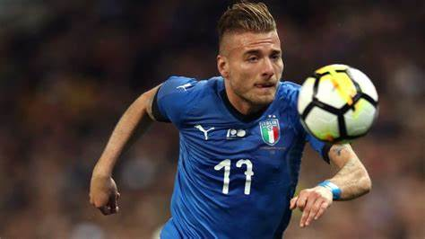
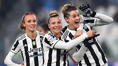
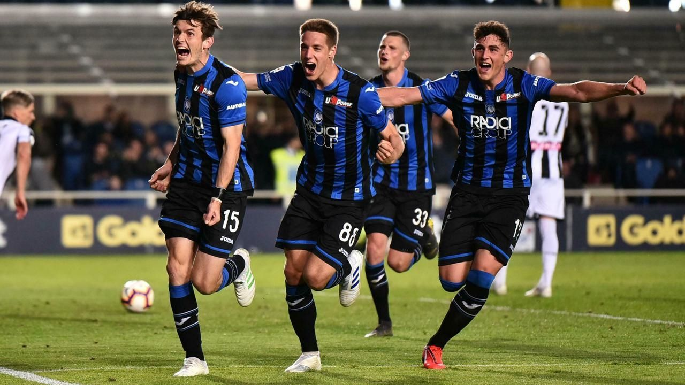
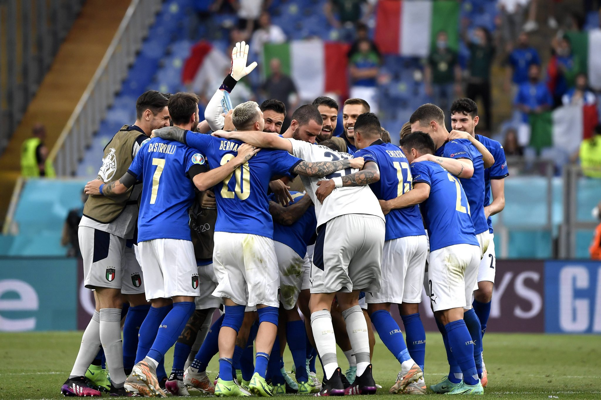
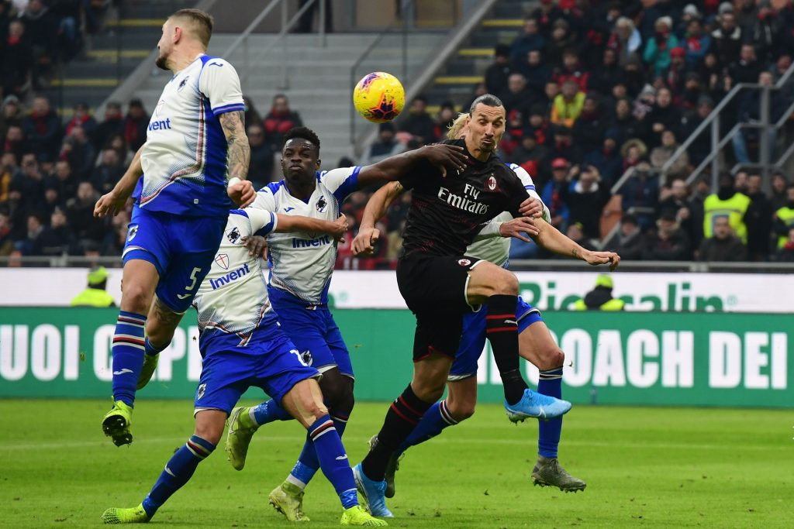
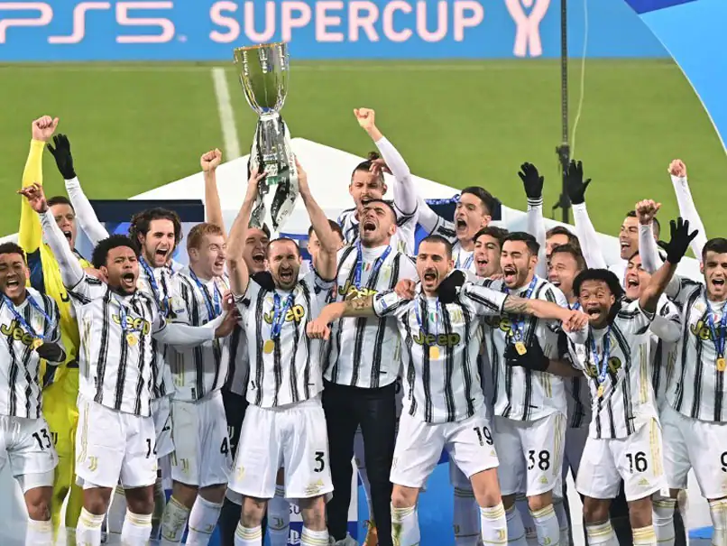
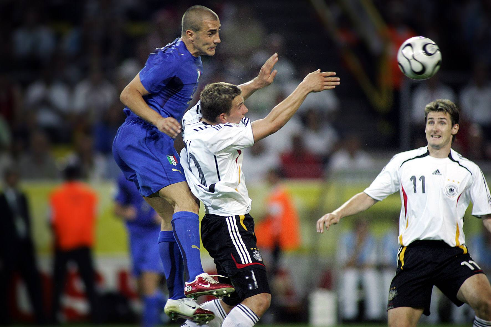
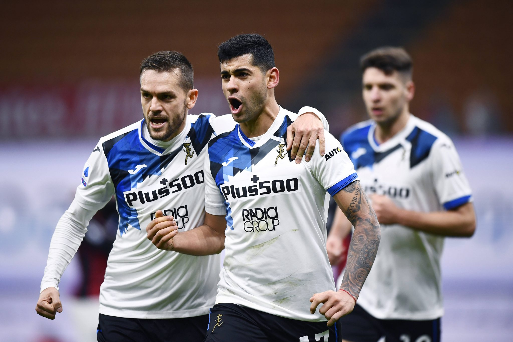
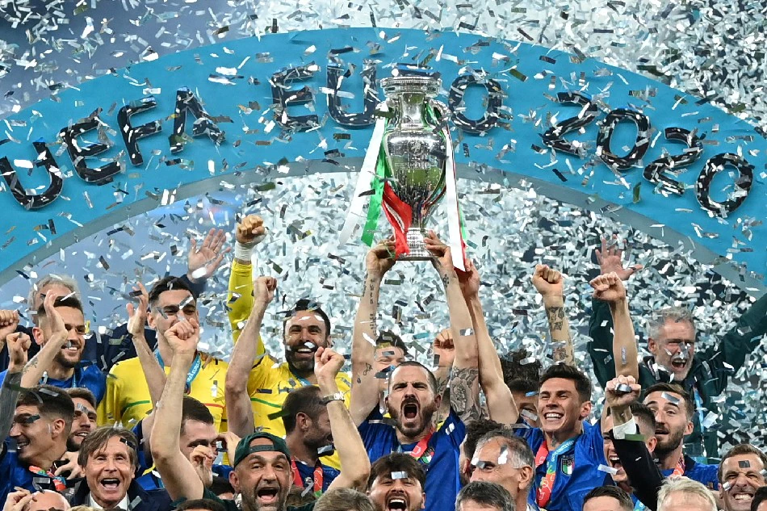
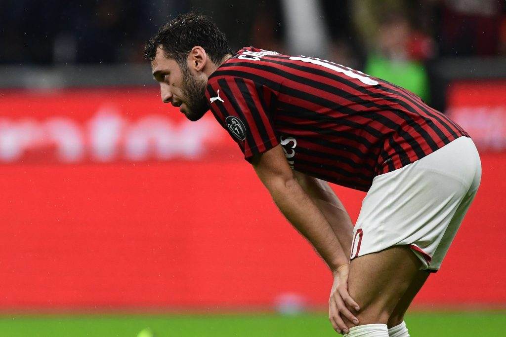

Home
Football
England
Italy
Spain
Germany
Egypt
Bascketball
Volleyball
Amirican F.B
Tennis
About
Italy
News
News
teams
fixtures
Results
Tables
Stats
Squad
Latest
 Italy striker Ciro Immobile was happy to end an international goal drought stretching back more than two years in Sunday’s European Championship qualifying win over Finland.
 Female football players in Italy will finally be able to turn professional next season after years of amateur-only status that limited their salaries.
 Two goals in the final ten minutes capped off a stunning week for Atalanta on Monday night, as they beat Udinese 2-0 to move into the top four. Having fought back to beat Napoli last Monday, before booking their place in the final of the Coppa Italia on Thursday, it seemed that Atalanta’s week would end in frustration against a resolute Udinese side. Yet a Marten de Roon penalty and a deflected Mario Pasalic effort were enough to seal an important victory late on.
 Repubblica report that the Italian FA (FIGC) has reached an agreement with the Italy squad for the prize money the team will receive, depending on how far the Azzurri are able to go at EURO 2020. A win in the Round of 16 tie against Austria on Saturday would see each player receive €30,000 – a figure agreed upon after negotiations between FIGC president Gabriele Gravina and the senior players in the team. Should Mancini’s men go on to reach the semi-finals, this number would rise to €150,000, and a place in the final would see all 26 members of the Azzurri squad earn €200,000 – along with a bonus, likely to be an extra €50,000, if they go on to win the trophy. Overall, the Italy prize money so far has amounted to close to €16m from UEFA for the three group stage wins, with the figure expected to increase to €19m with a win on Saturday. The Azzurri prepare to face Austria, who finished second in their group after a win over Ukraine on Monday, at Wembley for a spot in the last 8, and the chance to match their performance in the 2016 edition of the tournament.
As Zlatan Ibrahimovic made his return to Serie A, Sampdoria defender Omar Colley praised his side’s performance as they kept the Swedish striker off the scoresheet in their 0-0 draw with AC Milan. “We had three or four chances to score the winner,” Colley told Tuttomercatoweb after the final whistle at San Siro. “We are still happy; we claimed a point at San Siro against Milan. We stopped Ibrahimovic from scoring. We started 2020 in the best of ways.” “But he’s a champion of course. He has a lot of experience and has won a lot of trophies. It’s important for Italy and for Serie A.
 Andrea Pirlo won his first trophy as a coach on Wednesday as Juventus beat Napoli 2-0 in the Italian Super Cup. Cristiano Ronaldo blasted in his 20th goal of the season following a corner on 64 minutes in Reggio Emilia, before Napoli captain Lorenzo Insigne missed a penalty and Alvaro Morata added a second deep into injury time. Pirlo, 41, clinched his first silverware five months after taking over at his former club where he won four league titles. "Winning a first title (as a coach) is a great joy, different from that felt as a player, it's even more beautiful," said Pirlo, who lifted the trophy three times as a player with Juventus and AC Milan. Juventus won the annual trophy, played between the league champions and Italian Cup holders, for the ninth time, having finished runners-up last year to Lazio. "This trophy is very important because it can give us confidence for the rest of our season,"
The Westfalenstadion was a mix of stunned silence and buoyant Italian noise as the final few seconds ticked down on the 2006 World Cup semi-final. Host country Germany, having never been beaten at the stadium, had just gone behind in the final minute of extra-time to a stunning strike by Italy’s Fabio Grosso. A final ‘Hail Mary’ high ball is sent into the Italy penalty area, in a desperate bid to snatch an unlikely equaliser. The cross is met with a decisive header away from the middle of the 18-yard box by Fabio Cannavaro. Like any good defensive header, the ball loops high into the air some 30-yards from goal. Lukas Podolski stands beneath the clearance as it falls out of the summer sky, and in the blink of an eye Cannavaro has made up the 15 yards or so to get on the end of his own clearance and chests the ball away from the German striker.
 erie A sides Juventus and Juventus and Premier League side Tottenham could be potentially involved in a transfer domino effect, reports La Gazzetta dello Sport. The outlet provides some detail about potential outgoings from Juventus, suggesting the possibility of a ‘triangulation’ between Spurs, La Dea and the Old Lady. And this could be sparked by new Spurs sporting director Fabio Paratici. The Lilywhites have been linked with a move for Cristian Romero and if he does move to London once Atalanta sign him permanently from the Bianconeri.
LONDON, United Kingdom - Italy wrecked England's Euro 2020 party at Wembley on Sunday, winning the final on penalties to plunge the host nation into despair and prolong their 55-year wait to win a major title. Roberto Mancini's men recovered from the shock of conceding the quickest goal ever in a European Championship final to equalize and held their nerve to claim a 3-2 shootout victory.
 Having been a target for Bayern Munich back in 2014, AC MIlan midfielder Hakan Calhanoglu says that he would be very intrigued by a move to the German club if their ever resurrected their interest in him. “It was important that they were looking at me, but at the time Arjen Robben and Franck Ribery were playing on the wing, and they were beloved by the fans,” the Turkey international told Sport Bild. “That for me would have been difficult. If Bayern came back for me in the future, I definitely wouldn’t say no. I grew up in Germany. From a sporting perspective it’s obviously a dream to play for Bayern Munich, Borussia Dortmund, or another big club in Germany.”
Contact Us